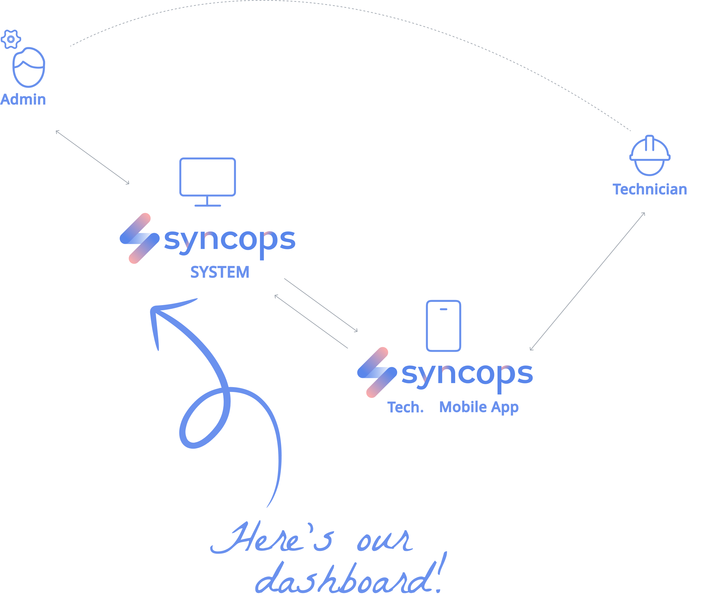
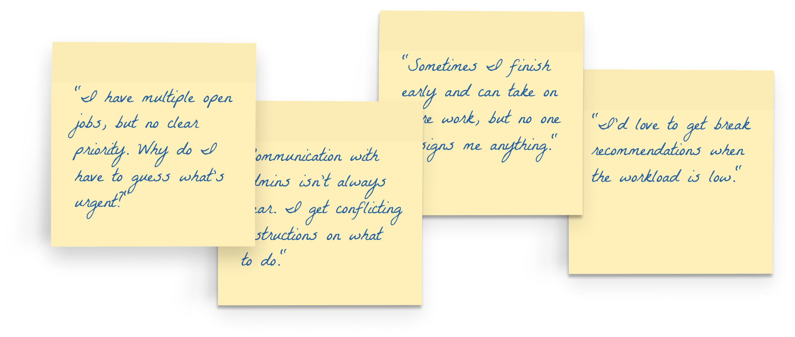
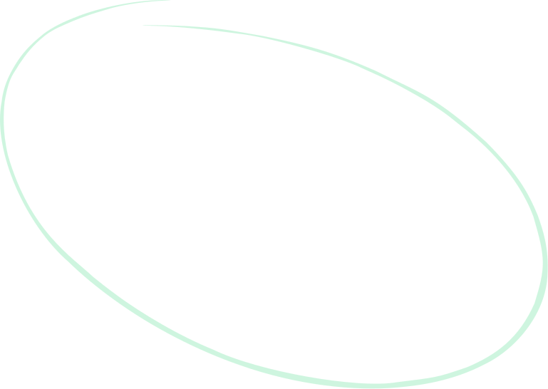
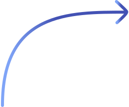
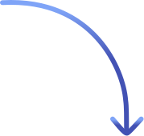
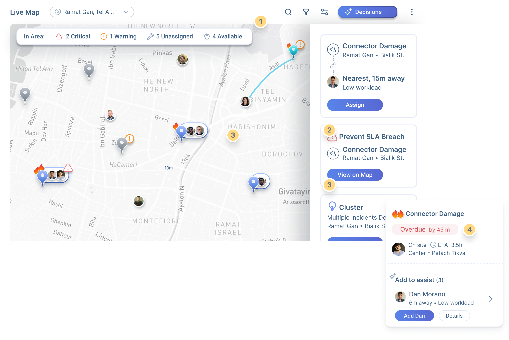
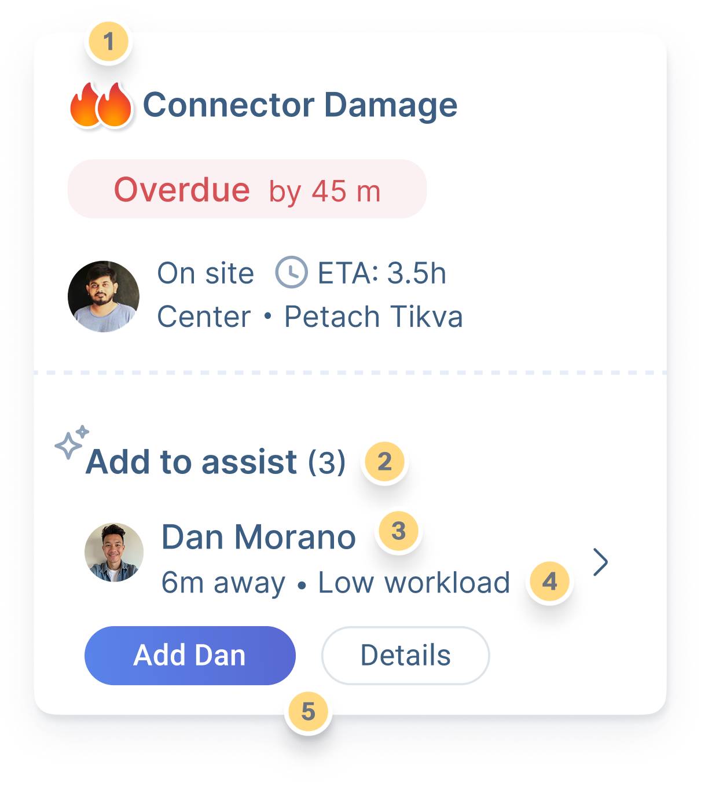
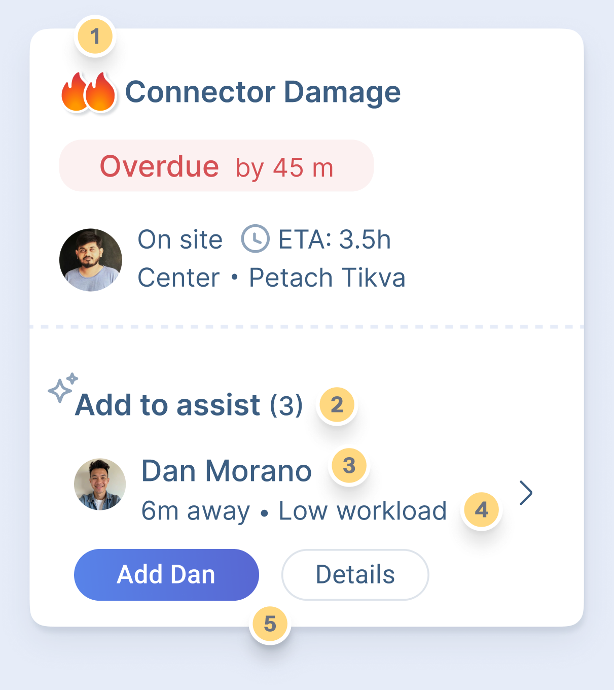

When Every Minute Counts -
Turn complex data
into confident decisions.
How I redesigned network operations from monitoring to decision-making - estimated ~50% faster task assignment.
Try the Live Demo (opens in a new tab)About SyncOps
Real-time SaaS for fiber-network operations at a large telecom - shipped and in daily use. The agentic layer shown here is designed ahead of its build.
My Role
- Research
- User Interviews
- Personas and Journeys
- UX Strategy
- AI Agentic Design
- Wireframes & Prototypes
- Usability testing
Scope
My scope: the admin dashboard - research to UI. It syncs in real time with the technicians’ mobile app - a separate product.
Under NDA - every name, screen and data point here was recreated from scratch. Nothing is client material.

The Issue Wasn’t Visibility.
It Was Time-to-Decision.
Every assignment still fused location, skills, workload, traffic and weather - in the admin’s head, under SLA pressure.

I’m wasting too much time finding an available technician! Why isn’t there a tool that does this for me?
- Administrator, user interviews
Issues remain open for hours because no one notices they haven’t been assigned.
- Administrator, user interviews
Grounded in the
Original Study.
Prefer Map-Based, Real-Time Operations
Admins Asked For Faster Response Times
Of Technicians Want Simpler Reporting
Point To Admin - Tech Communication Gaps
Ask For Predictive Maintenance Alerts
Interviews with administrators and field technicians · development-team consultations · conducted for the original SyncOps project.
Tamar Prinsy Administrator
Coordinates a central-region team in real time. Rates her own real-time decision-making at 70%.
“I’m wasting too much time finding an available technician.”
Avi Oren Field Technician
Ten years in fiber optics. Slowed by unclear briefs; blocked by weather in exposed areas.
“I have multiple open jobs, but no clear priority.”
Users Asked For An Agent -
Before The Word Existed.
Why isn’t there a tool that does this for me?
- AdministratorNo one notices they haven’t been assigned.
- AdministratorI’d love to get break recommendations when the workload is low.
- Field technicianThree Ways
to Add Intelligence.
Full Automation
Agent assigns silently.
Rejected - trust dies on the first hidden mistake.
Smarter Alerts
More sorted alerts
Rejected - Tamar still manually weighs everything.

Graduated Autonomy
The agent acts where safe, proposes where high-stakes, and always explains its reasoning.
Chosen
Solves the actual problem - Time-to-Decision - without giving up human control. Reduces load on the operator while building system trust over time.
Six Signals,
One Decision!
The agent continuously fuses operational data into one actionable proposal.
INPUT
- Live GPS & workload
- Skills & shift hours
- SLA clocks & issue history
- Admin rules & Zone constraints
- Traffic & ETA Public APIs · external, non-sensitive
- Weather Public APIs · external, non-sensitive

Agent

OUTPUT
- One ranked proposal
- Confidence score
- Plain-language reasoning
The agent fuses internal operational data with public traffic and weather APIs - no new data exposure, no proprietary data leaves the platform.
Where This
Sits in 2026.
Agent proposes, human approves - Salesforce, GA May 2025. Traffic-aware ETAs - Salesforce, Oracle, Microsoft.
Visible confidence with a threshold. Weather-aware re-planning. Coverage alerts. A dispatcher digest.
Vendor release notes and product docs, 2025 - verified Aug 2026.
major field-service suites ship the designed-here list today.
How the Agent
Reaches a Proposal
Collect
All six signals, continuously
Filter
Hard constraints: skill, area, shift hours, safety
Rank
Travel time, workload balance, SLA risk
Score
Confidence based on data freshness and margin
Decide
Above threshold → propose · below → hold and ask
From Five Manual Steps
to One Decision!
Before - The manual loop
- Spot the issue
- Scan the technician table
- Check availability
- Weigh skills & distance
- Assign & notify
After - With the dispatch agent
- Review the proposal - confidence + reasoning
- Approve. One click.
What the Agent Does
Automatically →
The Map Is
The Agent’s Canvas.

Why the map leads: spatial decisions are the fastest to make visually - the queue and roster answer what the map can’t.
What the admin used to hold in her head, the agent now shows on the map - proposals, risks, and clusters, in place.
Assignment Proposal
“Nearest, 15m away · low workload” - the agent’s pick, one click to accept.
SLA Watchdog
“Prevent SLA Breach” - flagged before the clock runs out, not after.
Cluster Detection
“Multiple incidents detected” - the agent spots a pattern a human would miss.
Coverage Alert
“Low coverage in Ramat Gan” - a gap surfaced before it becomes a problem.
Anatomy of
a Decision.

Urgency
Severity + SLA clock set the row’s priority and colour
Context
Nearest technician, workload, distance - fused automatically
Confidence
A score on the match, so the operator knows how much to trust it
Reasoning
Why this technician - one line, always visible
Next Action
One primary button: Assign. Everything else is secondary
Autonomy,
By Design.
Risk and reversibility set the level. Nothing acts silently.
Acts Alone
- Queue triage & prioritization
- Status sync & closure
- Event digests
Low-risk, reversible, always logged.
Suggests
- Technician assignment
- SLA-risk reassignment
- Preventive tasks
One-click approve; confidence + reasoning attached.
Never
- Silent dispatching
- Acting below the confidence threshold
The agent steps back and asks.
When the Agent
Isn’t Sure.

Held, Not Pushed
Below the threshold the agent proposes nothing - it flags and waits
Why It’s Unsure
Two reasons, in plain language - never a black box
58% - Under The Bar
High-stakes dispatch stays above the threshold. This one doesn’t
Paths, Not A Pick
Tamar compares options or asks the agent to dig deeper
Her Call
The decision stays human. The agent records the outcome
Human-in-the-Loop,
By Design.
Confidence
A score on every proposal
Explainability
“Why this technician” - one tap
Control
Approve · edit · override, one click
Undo
Agent actions are reversible
Transparency
Activity log of every agent step
A day with the agent -
Tamar Prinsy
A digest, not noise
One prioritized morning summary replaces a wall of alerts.
The watchdog catches a delay
Traffic holds a technician; the agent proposes a reassignment before the SLA breaks - a scenario straight from the original journey map.
One click. Her call.
Tamar approves. The system executes. Credit stays with the admin.
And on Avi’s side
Avi once asked for break recommendations on slow days. The agent surfaces that - as a proposal on Tamar’s board. The approved task lands in his field app, briefed and complete.
From Reactive
to Preventive.
Risk areas surface on the map - issue clusters, construction zones, incoming weather.
The agent drafts preventive tasks for at-risk segments - never silently scheduled.
Admins turn proposals into work orders. Prevention becomes routine, not luck.
of research participants asked for predictive alerts - in the original study.
Defined,
Not Claimed!
Time to assignment
from issue to technician
SLA breaches prevented
watchdog effectiveness
Decisions per hour
admin throughput
Utilization balance
fair load across the field
Override rate ↓
falling overrides = growing trust
The agentic layer is design work ahead of its build - it ships with its yardstick already defined. The ~50% gain is an internal estimate, against a baseline of about 8 minutes per manual assignment - observed and sized with the ops team. The next number gets measured.
What Designing An
Agent Taught Me
- Designing autonomy is designing trust.
- Suggest first - expand autonomy as trust grows.
- Agent UX lives in its failure states.
- First thing I would usability-test: the low-confidence moment.

Deals don’t fail. Visibility does!
An AI-driven decision-support timeline for syndicated-loan fintech.